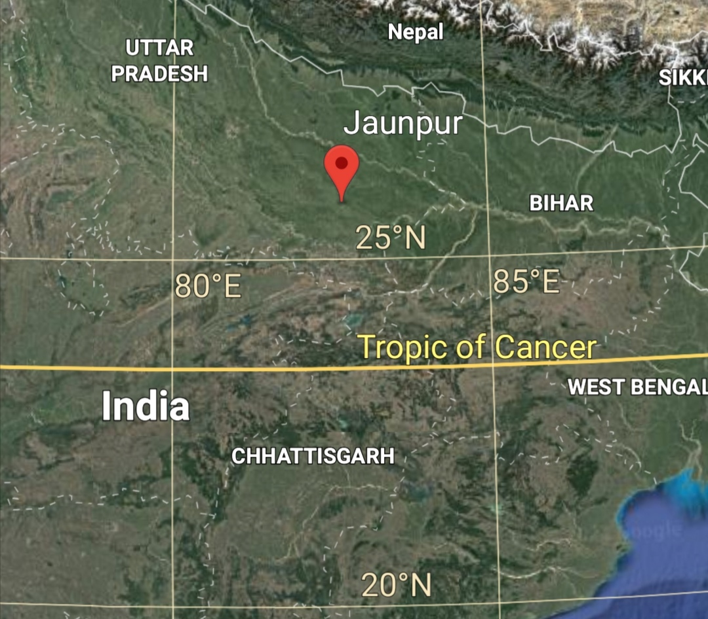

CS460-Machine Leraning-Project-Final Report
- Students::
- Haraprasad Dhal
- Raviprakash Singh
- Instructor::
- Dr. Subhankar Mishra
Goals
- We studied weather data of Jaunpur District in Uttarpradesh to make predictions on it.
- Prediction of Temperature and Precipitation using Time Series Models(Midsem)
- Use of RNN Model in Prediction(Post Midsem)

Challenge:
Time Series Methods
Time Series
-
A time series is a series of data points indexed in time order. Most commonly, a time series is a sequence of observation taken at successive
equally spaced points in time.
e.g Daily Max and Min Temperature record
- Time series analysis comprises methods for analyzing time series data in order to extract meaningful statistics and other characteristics of the data.
- Time series forecasting is the use of a model to predict future values based on previously observed values.
We want to use Time series models on the weather data of Janupur and make prediction on Temperature and Precipitation Values.
Stationarity of data And its Importance:
Stationarity is a statistical property
-
Constant mean
-
Constant Variance
- No Seasonality
- Repeating trend or pattern over time
To convert a Non-Stationary Data into Stationary.There are different ways to kill Non-Stationarity of different types.
-
Differencing , when Y(t) is following a linear trend.Y(t)=Y(t)-Y(t-1)
-
Sometime we need to do multiple time Differencing.
- Sometimes we take Y(t)=LOG(Y(t)) in case where Y(t) is ofexponential type forms.
- Seasonal differencing Y(t)=Y(t)-Y(t-1)
Models:
Auto Regression:
Uses past Values to make prediction.
\[
y_{t}=\beta_{0}+\beta_{1} y_{t-1}+\varepsilon_{t} \longrightarrow \mathrm{AR}(1)
\\
y_{t}=\beta_{0}+\beta_{1} y_{t-1}+\beta_{2} y_{t-2}+\varepsilon_{t} \longrightarrow \mathrm{AR}(2)
\\
y_{t}=\beta_{0}+\beta_{1} y_{t-1}+\beta_{2} y_{t-2}+.......+\beta_{P} y_{t-P}+\varepsilon_{t} \longrightarrow \mathrm{AR}(P)
\]
Moving-Average:
Uses past Error Values to make prediction.
\[
y_{t}=\beta_{0}+\theta_{1} \varepsilon_{t-1}+\varepsilon_{t} \longrightarrow \mathrm{MA}(1)\\
y_{t}=\beta_{0}+\theta_{1} \varepsilon_{t-1}+\theta_{2} \varepsilon_{t-2}+\varepsilon_{t} \longrightarrow \mathrm{MA}(2)\\
y_{t}=\beta_{0}+\theta_{1} \varepsilon_{t-1}+\theta_{2} \varepsilon_{t-2}+...............+\theta_{Q} \varepsilon_{t-Q}+\varepsilon_{t} \longrightarrow \mathrm{MA}(Q)\\
\]
ARMA Model:
\( \\ \quad y_{t}=B_{0}+B_{1} y_{t-1}+...+B_{P} y_{t-P}+\theta_1 \varepsilon_{t-1}+.....+\theta_Q \varepsilon_{t-Q}+\varepsilon_{t} \longrightarrow ARMA(P,Q)\\
\)
\(\varepsilon_{n}\) is the error in \(y_{n}\) prediction.
\(\beta_i\) and \(\theta_j\) are coefficients.
We have used ARIMA,SARIMA,SARIMAX models in the Prediction.The Detail can be found in midsem presentaion.
Finding parameters for model:
We have used ACF plots, PACF plots and AIC scores to set the model function and find p,q,d,P,D,Q and s values.
We use ACF And PACF plots, which measure the correlation between current time period and previous time lags.
Auto Correlation Function:
Measure direct and indirect effect of previous time lags on current value.Used to find order of Moving Average Model.
Partial Auto Correlation Function:
Measure only direct effect of previous time lags on current value value.Used to find order of Auto Regressive Model.
AIC:
We mainly used AIC score for model fitting upto ARIMA model but for SARIMAX we used the ACF and PACF plots to set the model function.AIC lets us to test how well our model fits the data set without over-fitting it. The AIC score rewards models that achieve a high goodness-of-fit score and penalizes them if they become overly complex.
Predictions:
-
{Monthly Average Temperature Prediction using {ARIMA(4,0,4)}}:
Trained for 450 months and Tested for next 30 months.
It has a RMSE of 2.935 for Mean temp being 25.051 and AIC = 1878.252.

-
Monthly Average Temp Prediction SARIMA((2,0,2),(3,0,3,12))}:
Trained for 450 months and Tested for next 30 months.
It has a RMSE of 1.820 for Mean temp being 25.051 and AIC = 1456.189

-
Monthly Average Temp Prediction SARIMAX (Surface Pressure)((2,0,2),(3,0,3,12))}:
Trained for 450 months and Tested for next 30 months.
It has a RMSE of 1.75 for Mean temp being 25.051 and AIC = 1450.676
.png)
Monthly Average Temp Prediction SARIMAX (Precipitation)((2,0,2),(3,0,3,12))}:
Trained for 450 months and Tested for next 30 months.
It has a RMSE of 1.658 for Mean temp being 25.051 and AIC = 1405.498.
.png)